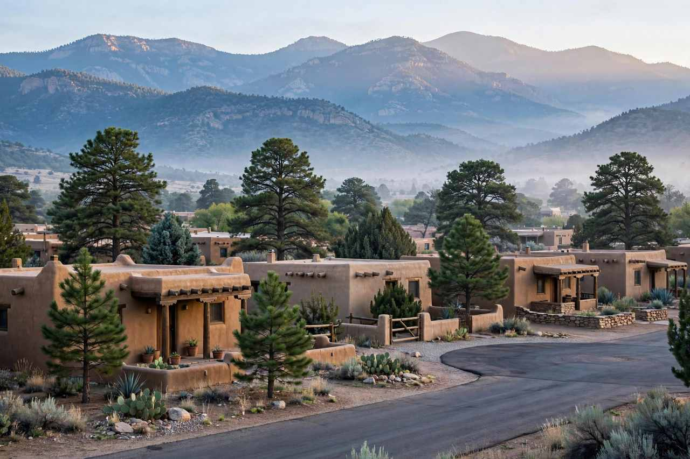

Rodent Control · Jemez Pueblo, NM
Trusted Rodent Control in Jemez Pueblo, NM
Hearing scratching at night or finding droppings in Jemez Pueblo? Murvo is a rodent-only specialist offering same-day service from local crews. We identify the species, remove the infestation, clean up the mess, and exclude rodents for good. Pricing is flat-rate and quoted in writing, the work is guaranteed in writing, and coverage extends across Sandoval County for homes and businesses alike. From Algodones, Santa Ana Pueblo, Cañon to every corner of Sandoval County, 1 ZIP codes are covered by local Murvo crews.
24/7Availability
1ZIP codes covered
Same-dayResponse
Licensed · Upfront options · Written guarantees · Fully insured
Jemez Pueblo at a glance
Local Rodent Control for Jemez Pueblo, NM.
Sandoval County
Countynorthern New Mexico
RegionRio Rancho · 22 mi
Nearest metro45 miles west of Santa Fe
From Santa Fe1
ZIP codes covered Service by service in Jemez Pueblo
Rodent Control Services Available in Jemez Pueblo
Rodent-only specialists serving Jemez Pueblo and Sandoval County. Every service below is explained in local terms - the species involved, the entry points that matter in desert-edge single-family homes, historic adobe and older in-town homes, and homes with mature desert landscaping, and the seasonal timing that decides whether a fix lasts.
- 01Rodent Control↗
- 02Rodent Inspection↗
- 03Rodent Removal↗
- 04Rodent Exclusion↗
- 05Rodent Proofing↗
- 06Rat Control↗
- 07Mice Control↗
- 08Mouse Removal↗
- 09Rat Removal↗
- 10Rodent Trapping↗
- 11Rodent Baiting↗
- 12Rodenticide Application↗
- 13Attic Rodent Removal↗
- 14Crawl Space Rodent Removal↗
- 15Wall Rodent Removal↗
- 16Kitchen Rodent Control↗
- 17Garage Rodent Control↗
- 18Commercial Rodent Control↗
- 19Residential Rodent Control↗
- 20Emergency Rodent Removal↗
- 21Same-Day Rodent Control↗
- 22Rodent Damage Repair↗
- 23Rodent Waste Cleanup↗
- 24Rodent Disinfection↗
- 25Rodent Odor Removal↗
- 26Dead Rodent Removal↗
- 27Rodent Dropping Cleanup↗
- 28Rodent Exclusion for Roofs↗
- 29Rodent Exclusion for Vents↗
- 30Rodent Exclusion for Chimneys↗
Rodent Control in Jemez Pueblo
Rodent Control in Jemez Pueblo
Droppings along baseboards, scratching after dark, or chewed packaging in Jemez Pueblo usually mean Pack rat (Neotoma spp.) or Roof rat (Rattus rattus) have moved in, not just passing through. Murvo's rodent control starts with a full inspection, removes the animals already inside, and seals the gaps they used. You get one flat-rate written quote before work begins, backed by our written workmanship guarantee.
Homeowners in Jemez Pueblo call Murvo for rodent control because the problem here is specific: Pack rat (Neotoma spp.) pressure around desert-edge single-family homes, historic adobe and older in-town homes, and homes with mature desert landscaping, tight access at rooflines and attic vents, garage gaps, AC and pool equipment enclosures, and openings around parked vehicles and stored items, and activity that follows the local season. Our Sandoval County crews diagnose the real source before recommending work, explain the options in plain language, and quote one flat rate in writing. Across Jemez Pueblo - including Cañon, Ponderosa - every visit is backed by licensed, insured technicians and our written workmanship guarantee. Around Algodones, Santa Ana Pueblo, Cañon, the pattern is similar: Roof rat (Rattus rattus) finds rooflines and attic vents, garage gaps, AC and pool equipment enclosures, and openings around parked vehicles and stored items first, and lasting rodent control has to close those routes.
We start by identifying whether Pack rat (Neotoma spp.), Roof rat (Rattus rattus), or both are active, because each species nests, feeds, and travels differently. Traps are placed on proven runways along walls, beams, and pipe runs, checked on schedule, and adjusted as catches change. Once numbers fall, exclusion sealing closes the route back in, droppings and nesting debris are removed hygienically, and follow-up monitoring checks the attic, crawl space, and kitchen until readings stay clear. Nothing is sealed while animals remain inside. That order protects your home.
When you call, tell us what you have seen and when the noises happen. Once you approve, trapping and sealing are booked in sequence, monitoring is scheduled, and the guarantee is left with you in writing at completion. That detail shapes the first visit. Your technician arrives as scheduled, inspects, and lays out findings before quoting. Keep the visit notes we leave behind; together they form a clear record of findings, approvals, completed work, and the monitoring results that closed the job.
In most of Jemez Pueblo, we can offer a same-day appointment for rodent control, and our lines are open 24/7 for urgent cases like scratching in the walls or a rodent in a living area. Your technician inspects first, explains the plan, and quotes a flat rate in writing before any work begins, so help starts fast without surprises. In Sandoval County, activity follows the local season, so timing the work matters as much as the method.
Murvo does not quote rodent control sight unseen, because species, activity, and sealing needs change the work involved. After inspection you get one flat-rate written quote, and that is the figure you pay. As national context only, Angi's 2026 figures put rat and mouse removal and control at an average of $396, with a typical range of $189 to $655 — a benchmark, not a Murvo price.
Rodent Inspection in Jemez Pueblo
Rodent Inspection in Jemez Pueblo
In Sandoval County, desert-edge single-family homes, historic adobe and older in-town homes, and homes with mature desert landscaping often hide entry gaps that stay invisible from ground level: lifted shingles, unsealed pipe penetrations, and garage door corners where Pack rat (Neotoma spp.) and Roof rat (Rattus rattus) slip through. A Murvo rodent inspection covers the roofline, foundation, attic, and crawl space in one visit, so you learn exactly where rodents get in and what closing each gap involves.
Homeowners in Jemez Pueblo call Murvo for rodent inspection because the problem here is specific: Pack rat (Neotoma spp.) pressure around desert-edge single-family homes, historic adobe and older in-town homes, and homes with mature desert landscaping, tight access at rooflines and attic vents, garage gaps, AC and pool equipment enclosures, and openings around parked vehicles and stored items, and activity that follows the local season. Our Sandoval County crews diagnose the real source before recommending work, explain the options in plain language, and quote one flat rate in writing. Across Jemez Pueblo - including Cañon, Ponderosa - every visit is backed by licensed, insured technicians and our written workmanship guarantee. Homes near Algodones tend to show activity first in Jemez Pueblo, which is why inspections start with rooflines and attic vents, garage gaps, AC and pool equipment enclosures, and openings around parked vehicles and stored items.
Think of the inspection as three passes. The review pass brings it together: species, likely numbers, contamination, and the order in which fixes should happen. Each pass is photographed, and nothing is recommended without evidence from one of those passes to support it. The exterior pass checks siding, vents, pipe entries, and roof junctions for gaps and rub marks. The interior pass covers attic insulation, crawl-space corners, and kitchen voids for droppings, nests, and gnawing. The report separates what rodents are doing now from what the structure merely allows them to do later.
Your part is simple: point out noises, droppings, and any past problems. Before leaving, you walk through the evidence together, discuss priorities, and decide what happens next, with no obligation attached. Ours is everything else. A background-checked technician arrives on time, protects access areas, and inspects inside and out against a set checklist. If you decide to proceed, those findings become the working plan, so no second survey is needed before approved repairs begin.
Inspections are the fastest way we help in Jemez Pueblo: same-day appointments are available in most areas, and urgent calls are answered 24/7. A typical rodent inspection takes under an hour for most homes, and you leave the visit with photos, written findings, and a flat-rate quote for any work we recommend, so decisions never wait on us. The written quote for your Jemez Pueblo property will spell out exactly which of these applies before any work starts.
Your exact rodent inspection price is confirmed before we visit, and any follow-up work is quoted as a flat rate in writing after the inspection — no hourly billing. For context, Angi's 2026 data puts a professional rodent inspection nationally at $100 to $200, often credited toward the job if you proceed.
Rodent Removal in Jemez Pueblo
Rodent Removal in Jemez Pueblo
In desert-edge single-family homes, historic adobe and older in-town homes, and homes with mature desert landscaping, removal fails when it ignores how rodents actually live: close to food, water, and undisturbed cover near rooflines and attic vents, garage gaps, AC and pool equipment enclosures, and openings around parked vehicles and stored items. Our rodent removal in Sandoval County starts by mapping that daily pattern, then removes animals room by room, including attics and garages, until monitoring, not optimism, says the home is clear.
In Jemez Pueblo, rodent removal is not a generic spray-and-go service. Rodents exploit rooflines and attic vents, garage gaps, AC and pool equipment enclosures, and openings around parked vehicles and stored items in desert-edge single-family homes, historic adobe and older in-town homes, and homes with mature desert landscaping, and a fix that ignores those routes does not last. Murvo's Jemez Pueblo team inspects first, shows you the evidence - droppings, gnaw marks, entry gaps - and then lays out the work with a flat-rate written quote. We serve all of Sandoval County from Jemez Pueblo, including Cañon, Ponderosa, and every job is covered by our written workmanship guarantee. In Jemez Pueblo, rodent removal calls most often involve desert-edge single-family homes, historic adobe and older in-town homes, and homes with mature desert landscaping, where rooflines and attic vents, garage gaps, AC and pool equipment enclosures, and openings around parked vehicles and stored items decide whether the fix holds.
Why trap first instead of reaching for poison? Because trapped animals can be counted, removed, and disposed of hygienically, while poisoned animals can die where nobody can reach them. Technicians therefore match traps to species and setting, work attics, voids, and kitchens in sequence, and retrieve any carcass promptly. Contaminated nesting material is bagged carefully, affected surfaces are disinfected before any cleaning, and dry sweeping of droppings is never used, since that spreads contamination into the air. The sequence ends with monitoring, because removal without a confirming check is a claim rather than a result.
Call, describe the signs, and we will set a visit window, often for the same day. With approval, traps go in immediately. Return visits are already booked, so clearing, resetting, and progress updates happen without you chasing anyone for news. The first appointment confirms species and numbers, explains the trapping sequence, and produces your written quote. Photographs and catch records are shared as the program runs, giving you visible proof of progress rather than a verbal summary at the end.
When rodents are active indoors in Jemez Pueblo, waiting rarely helps. Rodent removal can usually start the same day you call, our line answers 24/7 for a rodent loose in a living area, and the first visit sets traps straight away. Scheduled returns then clear and reset them until monitoring shows the home is clear. Around Jemez Pueblo, desert-edge single-family homes, historic adobe and older in-town homes, and homes with mature desert landscaping give rodents the most cover, which is why entry points get checked before traps are set.
How many animals are active, which species they are, and how much sealing follows removal all shape the price, so we assess first and then quote one flat rate in writing. Angi's 2026 national context — an average of $396 and a typical $189 to $655 range for rat and mouse removal — is provided for comparison only; your written quote is the exact Murvo figure.
Rodent Exclusion in Jemez Pueblo
Rodent Exclusion in Jemez Pueblo
In desert-edge single-family homes, historic adobe and older in-town homes, and homes with mature desert landscaping, exclusion is detective work as much as building work. Rub marks at rooflines and attic vents, garage gaps, AC and pool equipment enclosures, and openings around parked vehicles and stored items, droppings below a vent, and daylight under a door each point somewhere different in Sandoval County homes. Our technicians follow those clues for Pack rat (Neotoma spp.) and Roof rat (Rattus rattus), prioritize active openings, and leave inactive weaknesses clearly noted.
In Jemez Pueblo, rodent exclusion is not a generic spray-and-go service. Rodents exploit rooflines and attic vents, garage gaps, AC and pool equipment enclosures, and openings around parked vehicles and stored items in desert-edge single-family homes, historic adobe and older in-town homes, and homes with mature desert landscaping, and a fix that ignores those routes does not last. Murvo's Jemez Pueblo team inspects first, shows you the evidence - droppings, gnaw marks, entry gaps - and then lays out the work with a flat-rate written quote. We serve all of Sandoval County from Jemez Pueblo, including Cañon, Ponderosa, and every job is covered by our written workmanship guarantee. Seasonal timing matters for rodent exclusion in Jemez Pueblo: Rodents in Jemez Pueblo peak twice: in attics during summer heat and again in winter.
Before any sealing, active rodents are cleared with trapping so nothing is trapped inside the structure. A final walkthrough shows you every protected opening, and monitoring checks confirm no new activity appears at sealed points. We then work opening by opening around rooflines and attic vents, garage gaps, AC and pool equipment enclosures, and openings around parked vehicles and stored items, rooflines, and utility penetrations, photographing each finished seal. Because exclusion removes the route in rather than relying on chemicals, it reduces the need for rodenticides and supports pet-safe, no-poison control. Every seal is listed on your written guarantee.
Book the survey, and we will work around your schedule, including urgent openings near wiring or food storage. Your technician lists every gap found, explains which are active, and quotes the sealing as one written figure. Approved work is completed opening by opening, photographed as it progresses, and reviewed with you before the visit ends. The finished inventory lists every material used at every opening, which makes later inspections faster and keeps the guarantee easy to enforce.
The first step is a survey, and in Jemez Pueblo we can often schedule that survey the same day you call about rodent exclusion. Sealing follows once active animals are cleared — nothing is ever sealed inside — and most homes are fully sealed within days, with entry points near wiring or food areas handled first. In Sandoval County, most cases involve the Pack rat (Neotoma spp.) and the Roof rat (Rattus rattus), so the inspection focuses on their routes first.
After the survey of your Jemez Pueblo home, every opening that needs sealing is listed and priced as one flat-rate written quote, so you pay only for the work your property needs. For national context, Angi's 2026 data puts basic exclusion at $200 to $600 depending on access and the number of openings; that benchmark is not a Murvo price.
Rodent Proofing in Jemez Pueblo
Rodent Proofing in Jemez Pueblo
The best rodent problem is the one that never starts. Rodent proofing in Jemez Pueblo hardens your home before Pack rat (Neotoma spp.) and Roof rat (Rattus rattus) move in: sealing gaps, screening vents, fitting door sweeps, and removing the food and shelter that attract them. Murvo surveys the whole property, prioritizes the work, and gives one flat-rate written quote for the work.
When you need rodent proofing in Jemez Pueblo, the job starts with what is actually happening in your part of Sandoval County. Murvo crews work Jemez Pueblo every week, so they know how Pack rat (Neotoma spp.) and Roof rat (Rattus rattus) behave around desert-edge single-family homes, historic adobe and older in-town homes, and homes with mature desert landscaping here - and where they get in: rooflines and attic vents, garage gaps, AC and pool equipment enclosures, and openings around parked vehicles and stored items. We arrive equipped for the full job, confirm the flat rate in writing before work begins, and cover the whole Jemez Pueblo area, including Cañon, Ponderosa. No call-center runaround and no open-ended hourly billing - just a local crew, a clear plan, and a written quote you approve first. Seasonal timing matters for rodent proofing in Jemez Pueblo: Rodents in Jemez Pueblo peak twice: in attics during summer heat and again in winter.
Proofing divides naturally into structure, surroundings, and habits. Surroundings means trimming branches back from the roofline, moving clutter and timber away from walls, and reducing sheltered harborage. Habits means securing pet food, bird seed, and stored produce so the property stops advertising itself. Structure means sealing utility entries, screening vents and chimneys, and fitting sweeps where doors leak light. Technicians assess all three layers in one survey and rank the combined findings by impact, not by what is easiest to sell.
After booking, we confirm your appointment and any access needs, such as gates or attic hatches. Before leaving, you walk the finished sealing together, receive care and storage advice, and confirm the guarantee. Later re-checks verify sweeps, screens, and seals are still holding. On the day, your background-checked technician completes the survey and agreed proofing work in one visit where possible. Nothing is added to your bill without approval first.
Rodent proofing is preventive, so there is rarely a rush, but surveys in Jemez Pueblo can often be arranged the same day you call, and always within a few days. Most proofing work is completed in a single visit once you approve the plan, and booking before colder weather gives your home protection ahead of the seasonal rush indoors. The written quote for your Jemez Pueblo property will spell out exactly which of these applies before any work starts.
For national context, Angi's 2026 data puts exclusion, the core of proofing, at $200 to $600 for basic work. That figure is a benchmark, not a Murvo price. After surveying your Jemez Pueblo property, we separate quick homeowner wins from specialist sealing and quote the professional work as one flat rate in writing, so you can stage spending sensibly.
Rat Control in Jemez Pueblo
Rat Control in Jemez Pueblo
In desert-edge single-family homes, historic adobe and older in-town homes, and homes with mature desert landscaping, rats exploit structure and routine together, traveling fences and pipes to reach food near rooflines and attic vents, garage gaps, AC and pool equipment enclosures, and openings around parked vehicles and stored items. Our rat control across Sandoval County checks attics, basements, drains, and outbuildings as one connected system, because treating a single room while harborage survives elsewhere simply moves the problem around the property.
In Jemez Pueblo, rat control is not a generic spray-and-go service. Rodents exploit rooflines and attic vents, garage gaps, AC and pool equipment enclosures, and openings around parked vehicles and stored items in desert-edge single-family homes, historic adobe and older in-town homes, and homes with mature desert landscaping, and a fix that ignores those routes does not last. Murvo's Jemez Pueblo team inspects first, shows you the evidence - droppings, gnaw marks, entry gaps - and then lays out the work with a flat-rate written quote. We serve all of Sandoval County from Jemez Pueblo, including Cañon, Ponderosa, and every job is covered by our written workmanship guarantee. Seasonal timing matters for rat control in Jemez Pueblo: Rodents in Jemez Pueblo peak twice: in attics during summer heat and again in winter.
Wary rats punish rushed trapping, so the program begins with patience. Exclusion follows at rooflines and entry points, and monitoring devices remain in place afterwards to verify that quiet routes have genuinely stayed quiet. Unset traps are placed on confirmed runways and pre-baited until feeding becomes confident and regular. Only then are traps set, checked frequently, and repositioned as the pattern shifts. Catches are recorded by location, giving a clear picture of colony size and movement. Counts matter here, because a falling catch trend tells a different story from a single lucky night.
Call for rat control in Jemez Pueblo and we will book an inspection, often the same day for active problems. Trapping visits then run on a set schedule, with placements adjusted as activity shifts. The job closes only when monitoring confirms rats are gone and exclusion is complete. Your technician maps routes and harborage, explains the trapping plan, and gives you a flat-rate written quote before any work begins. Your guarantee is confirmed in writing.
Call day or night — urgent rat control calls in Jemez Pueblo are answered 24/7, and a same-day inspection can usually start the program. Pre-baiting begins on that first visit once you approve the written quote, traps are set when rats are feeding confidently, and scheduled checks continue until activity stops. If you are seeing signs now, an inspection this week is the fastest way to know which situation you are in.
Rat work varies with species, colony size, and how many entry points need sealing, so Murvo inspects first and quotes one flat rate in writing. For national context only, Angi's 2026 data averages rat control and removal at $396, typically $189 to $655. That benchmark is not a Murvo price; the written quote for your Jemez Pueblo home is the exact figure you pay.
Mice Control in Jemez Pueblo
Mice Control in Jemez Pueblo
Mice slip into desert-edge single-family homes, historic adobe and older in-town homes, and homes with mature desert landscaping in Jemez Pueblo through rooflines and attic vents, garage gaps, AC and pool equipment enclosures, and openings around parked vehicles and stored items and settle near warmth and food: behind appliances, inside attic voids, and along pipe runs. Because they investigate new objects quickly, clustered traps work fast when placed correctly. Our licensed, insured technicians also advise on food storage and scent-trail cleaning, then confirm with follow-up visits that activity has genuinely stopped.
Homeowners in Jemez Pueblo call Murvo for mice control because the problem here is specific: Pack rat (Neotoma spp.) pressure around desert-edge single-family homes, historic adobe and older in-town homes, and homes with mature desert landscaping, tight access at rooflines and attic vents, garage gaps, AC and pool equipment enclosures, and openings around parked vehicles and stored items, and activity that follows the local season. Our Sandoval County crews diagnose the real source before recommending work, explain the options in plain language, and quote one flat rate in writing. Across Jemez Pueblo - including Cañon, Ponderosa - every visit is backed by licensed, insured technicians and our written workmanship guarantee. Coverage for mice control spans 1 ZIP codes in Sandoval County, including 87024.
Hygiene is part of control, not an afterthought. Droppings in cabinets are never dry-swept; surfaces are disinfected first, following careful practice, so contamination is not pushed into the air, and nesting debris is bagged and removed. Technicians also review how food, pet supplies, and bird seed are stored, since an open supply restarts activity quickly. The program favors traps over bait throughout, which keeps family kitchens safer and makes every result countable and visible. Follow-up monitoring then verifies the kitchen, attic, and voids together, rather than treating each room in isolation.
During the program, store opened food in sealed containers and keep trap areas undisturbed. At the end you review the catch record together, receive prevention advice, and confirm the written guarantee before close. Your background-checked technician returns to clear and reset clusters, adjusts placements if the pattern shifts, and completes sealing once numbers fall. Prevention notes cover the exact storage and sealing issues found at your home, making them practical rather than generic advice.
Mice multiply fast, so mice control in Jemez Pueblo is built to start fast too: a survey can often be arranged the same day you call, with traps set on that first visit once the quote is approved. Because mice investigate new objects quickly, catches usually begin soon after, and check visits follow until a final confirmation shows activity has stopped. A Jemez Pueblo inspection confirms it on site - dropping size, gnaw marks, and entry points tell the story quickly.
The number of rooms affected and the amount of sealing required set the price, so Murvo surveys first and quotes one flat rate in writing. For national context only, Angi's 2026 data averages rat and mouse control and removal at $396, typically $189 to $655 — not a Murvo price; your written quote is exact.
Mouse Removal in Jemez Pueblo
Mouse Removal in Jemez Pueblo
What does proper removal include beyond the traps themselves? Hygienic clearing of droppings and nesting, disinfection of affected cabinets, and sealing that stops the next mice using the same scent trails. Murvo delivers that complete finish with licensed, insured technicians and a written workmanship guarantee on the completed work.
When you need mouse removal in Jemez Pueblo, the job starts with what is actually happening in your part of Sandoval County. Murvo crews work Jemez Pueblo every week, so they know how Pack rat (Neotoma spp.) and Roof rat (Rattus rattus) behave around desert-edge single-family homes, historic adobe and older in-town homes, and homes with mature desert landscaping here - and where they get in: rooflines and attic vents, garage gaps, AC and pool equipment enclosures, and openings around parked vehicles and stored items. We arrive equipped for the full job, confirm the flat rate in writing before work begins, and cover the whole Jemez Pueblo area, including Cañon, Ponderosa. No call-center runaround and no open-ended hourly billing - just a local crew, a clear plan, and a written quote you approve first. In Jemez Pueblo, mouse removal calls most often involve desert-edge single-family homes, historic adobe and older in-town homes, and homes with mature desert landscaping, where rooflines and attic vents, garage gaps, AC and pool equipment enclosures, and openings around parked vehicles and stored items decide whether the fix holds.
We favor trap-based, no-poison removal, which is safer around children and pets and avoids mice dying in hidden voids. Sealing then closes the route permanently. Cleanup follows CDC guidance: droppings and nesting debris are never dry-swept, because that can spread contamination; surfaces are disinfected first, then waste is removed hygienically. We also advise on safe cleaning of cabinets and storage areas afterwards, so your kitchen feels properly yours again once the program is complete and monitoring confirms zero activity. That finish is guaranteed in writing.
For mice active in living areas, call and we will aim for a same-day start where available. The first visit surveys nesting sites, sets out the multi-trap plan, and confirms your written quote. Traps are placed only after approval, return visits are booked ahead, and you receive a plain update after every check without chasing. Rooms are returned to normal use as soon as their checks are clear, and we tell you plainly which areas those are.
In Jemez Pueblo, mouse removal can often begin the same day you call, especially where mice are active in kitchens or living areas. The first visit surveys nesting sites and sets traps immediately after you approve the quote; because mice investigate traps quickly, catches usually start fast, and return visits continue until numbers reach zero. If you are seeing signs now, an inspection this week is the fastest way to know which situation you are in.
Rooms involved and sealing needed determine the cost of removal, so we survey first and agree a flat rate in writing before work begins. As national context only, Angi's 2026 data averages rat and mouse removal at $396, with a typical range of $189 to $655; that benchmark is not a Murvo price, and your written quote covers your exact program.
Rat Removal in Jemez Pueblo
Rat Removal in Jemez Pueblo
A hurried rat removal that misses breeding females or a hidden nest simply restarts the cycle. Murvo's rat removal in Jemez Pueblo starts with a species and colony-size assessment, uses pre-baited traps on confirmed runways, and removes animals hygienically across repeat visits. A flat-rate written quote is agreed before trapping starts.
In Jemez Pueblo, rat removal is not a generic spray-and-go service. Rodents exploit rooflines and attic vents, garage gaps, AC and pool equipment enclosures, and openings around parked vehicles and stored items in desert-edge single-family homes, historic adobe and older in-town homes, and homes with mature desert landscaping, and a fix that ignores those routes does not last. Murvo's Jemez Pueblo team inspects first, shows you the evidence - droppings, gnaw marks, entry gaps - and then lays out the work with a flat-rate written quote. We serve all of Sandoval County from Jemez Pueblo, including Cañon, Ponderosa, and every job is covered by our written workmanship guarantee. Around Algodones, Santa Ana Pueblo, Cañon, the pattern is similar: Roof rat (Rattus rattus) finds rooflines and attic vents, garage gaps, AC and pool equipment enclosures, and openings around parked vehicles and stored items first, and lasting rat removal has to close those routes.
Removal begins by establishing species and the scale of the problem, because a single transient rat and an attic colony need very different programs. Attic colonies may need dedicated attic work, while a carcass in a void calls for retrieval and odor treatment. Sealing follows once the property is clear. Technicians pre-bait unset traps on confirmed runways so cautious rats feed without fear, then set them, returning frequently to remove animals hygienically and adjust placements as activity shifts. Nothing is rushed at this stage.
Help the program by securing food, clearing access to the attic or basement, and leaving traps exactly where placed. Your background-checked technician handles removal, adjustments, sanitation, and the final monitoring period. Sign-off includes the documented evidence, your guarantee in writing, and practical proofing guidance tailored to how rats reached your property in the first place. You also receive guidance on drains, vegetation, and storage specific to your property, aimed at discouraging the next colony from settling.
Rats in a living area cannot wait for a routine slot. In Jemez Pueblo, rat removal can usually start the same day you call and our line answers 24/7 for urgent cases. Pre-baiting starts on the first visit after you approve the written quote, traps are set once rats feed confidently — typically within days — and frequent returns run until monitoring confirms the colony is gone. In Sandoval County, activity follows the local season, so timing the work matters as much as the method.
Colony size, access, and the sealing needed afterwards drive the price, so Murvo assesses the property first and quotes a flat rate in writing covering the full program. Angi's 2026 data, for national context only, averages rat removal at $396 and typically ranges from $189 to $655; that is a benchmark, not a Murvo price.
Rodent Trapping in Jemez Pueblo
Rodent Trapping in Jemez Pueblo
In desert-edge single-family homes, historic adobe and older in-town homes, and homes with mature desert landscaping, species behavior drives every choice. Wary Pack rat (Neotoma spp.) need days of pre-baiting before unset traps can be armed, while Roof rats (Rattus rattus) investigate clustered traps quickly near rooflines and attic vents, garage gaps, AC and pool equipment enclosures, and openings around parked vehicles and stored items routes across Sandoval County. Our technicians match device, bait, and position to that behavior instead of relying on a single generic setup.
When you need rodent trapping in Jemez Pueblo, the job starts with what is actually happening in your part of Sandoval County. Murvo crews work Jemez Pueblo every week, so they know how Pack rat (Neotoma spp.) and Roof rat (Rattus rattus) behave around desert-edge single-family homes, historic adobe and older in-town homes, and homes with mature desert landscaping here - and where they get in: rooflines and attic vents, garage gaps, AC and pool equipment enclosures, and openings around parked vehicles and stored items. We arrive equipped for the full job, confirm the flat rate in writing before work begins, and cover the whole Jemez Pueblo area, including Cañon, Ponderosa. No call-center runaround and no open-ended hourly billing - just a local crew, a clear plan, and a written quote you approve first. Coverage for rodent trapping spans 1 ZIP codes in Sandoval County, including 87024.
Adjustment is where experience shows. If catches cluster at one end of a runway, placements concentrate there; if a route goes quiet while another warms up, devices move accordingly. Baits are refreshed and matched to what the species is already eating nearby. Households receive a simple map of device locations and safety guidance for children and pets. As numbers fall toward zero, attention shifts to exclusion recommendations and cleanup, converting a trapping program into lasting protection. Households can follow that adjustment process through the shared catch log, which records every change of position.
Book rodent trapping in Jemez Pueblo and a technician can often start the same day. When numbers reach zero, we confirm monitoring is clear and discuss sealing. The first visit inspects, maps activity, and places or pre-baits traps; you approve a flat-rate written quote covering the program including check visits before we proceed. Scheduled returns clear and reset traps and share catch records with you. The finished program is guaranteed in writing.
In Jemez Pueblo, rodent trapping can usually start the same day you call, with traps placed or pre-baiting begun on the first visit after you approve the quote. Mice often investigate within the first night; wary rats need a few days of pre-baiting before traps are set. Scheduled check visits then keep catches moving until numbers reach zero. In Sandoval County, activity follows the local season, so timing the work matters as much as the method.
Trapping is usually quoted as part of a complete removal program rather than by the trap, and the price depends on species, activity level, and how many check visits are needed. Murvo inspects first and quotes one flat rate in writing covering the program and its check visits, so there are no per-visit surprises and no hourly billing at any stage.
Rodent Baiting in Jemez Pueblo
Rodent Baiting in Jemez Pueblo
Baiting suits established rat activity outdoors or in garages around Jemez Pueblo, where droppings keep returning despite traps. Even then, our approach is exclusion-first: seal the entry points around rooflines and attic vents, garage gaps, AC and pool equipment enclosures, and openings around parked vehicles and stored items, trap what is already inside, and use locked stations only to reduce outdoor pressure. Stations are labeled, secured, photographed, and removed once monitoring shows activity has ended.
In Jemez Pueblo, rodent baiting is not a generic spray-and-go service. Rodents exploit rooflines and attic vents, garage gaps, AC and pool equipment enclosures, and openings around parked vehicles and stored items in desert-edge single-family homes, historic adobe and older in-town homes, and homes with mature desert landscaping, and a fix that ignores those routes does not last. Murvo's Jemez Pueblo team inspects first, shows you the evidence - droppings, gnaw marks, entry gaps - and then lays out the work with a flat-rate written quote. We serve all of Sandoval County from Jemez Pueblo, including Cañon, Ponderosa, and every job is covered by our written workmanship guarantee. Seasonal timing matters for rodent baiting in Jemez Pueblo: Rodents in Jemez Pueblo peak twice: in attics during summer heat and again in winter.
Baiting here sits inside a wider sequence, never outside it. Inspection maps activity and identifies where pressure originates. Exclusion work seals the structure, trapping clears animals already indoors, and only then do locked stations address the outdoor population along fence lines and runways. Each station is anchored, labeled, and photographed, with its location recorded. Monitoring visits log consumption precisely, and falling consumption, confirmed by other signs, decides when stations are reduced and finally removed altogether. Those logs become especially important when activity fades, because several quiet checks must agree before stations come out.
Booking rodent baiting in Jemez Pueblo starts with an inspection, not a station. Your technician maps activity, reviews pet, child, and wildlife concerns with you, and confirms a flat-rate written quote before anything is placed. Approved stations are installed locked and labeled the same visit, with locations photographed for you. Monitoring visits are scheduled before we leave, and stations come out once activity is confirmed clear. Your written guarantee covers the full program.
Deliberate setup matters more than speed with rodent baiting, but the first step is still fast: an inspection in Jemez Pueblo can often be arranged the same day you call. Stations are placed only after activity is mapped and you approve the written quote and each location, then monitoring runs on a fixed schedule until consumption stops and activity is confirmed clear. Murvo's Jemez Pueblo crews explain the finding either way, and the flat-rate quote leaves the decision with you.
Baiting cost depends on how many locked stations your property needs and how long monitoring runs, so Murvo inspects and maps activity first, then quotes one flat rate in writing covering placement and scheduled checks. There are no per-visit surprises, and because our approach is exclusion-first, the goal is always to reduce and eventually remove stations, not maintain them forever.
Rodenticide Application in Jemez Pueblo
Rodenticide Application in Jemez Pueblo
Our approach in Jemez Pueblo is exclusion-first: seal entry points, trap active animals, and shrink the need for chemical control quickly. Where rodenticide application is genuinely justified for Pack rat (Neotoma spp.) or Roof rat (Rattus rattus), a licensed technician maps, labels, and anchors every station, records amounts at each visit, and retrieves dead rodents promptly where accessible to reduce odor and secondary risks.
When you need rodenticide application in Jemez Pueblo, the job starts with what is actually happening in your part of Sandoval County. Murvo crews work Jemez Pueblo every week, so they know how Pack rat (Neotoma spp.) and Roof rat (Rattus rattus) behave around desert-edge single-family homes, historic adobe and older in-town homes, and homes with mature desert landscaping here - and where they get in: rooflines and attic vents, garage gaps, AC and pool equipment enclosures, and openings around parked vehicles and stored items. We arrive equipped for the full job, confirm the flat rate in writing before work begins, and cover the whole Jemez Pueblo area, including Cañon, Ponderosa. No call-center runaround and no open-ended hourly billing - just a local crew, a clear plan, and a written quote you approve first. Homes near Algodones tend to show activity first in Jemez Pueblo, which is why inspections start with rooflines and attic vents, garage gaps, AC and pool equipment enclosures, and openings around parked vehicles and stored items.
Monitoring data guides the whole treatment: whether it continues, changes product, or stops entirely in favor of proofing alone. Dead rodents are retrieved promptly where accessible, stations are kept away from pet and child areas, and every product used is documented with its label and safety information, so nothing applied at your property is ever hidden from you. We prioritize sealing entry points with exclusion and physical removal so dependence on chemical control shrinks visit by visit. State restrictions are checked before product selection.
Before the visit, tell us about children, pets, livestock, and wildlife using the property; that information shapes product and placement decisions. On the day, your background-checked technician installs any approved stations locked and labeled, records the details, and explains what to watch for. Scheduled checks follow until activity ends and stations are removed. Label information, amounts, and visit dates stay in your records throughout, so the treatment history is complete and available whenever needed.
No responsible rodenticide application starts without an inspection, and in Jemez Pueblo that inspection can often be scheduled the same day you call. If treatment is justified and you approve the written quote, locked stations are installed on that visit. Monitoring then runs on schedule, and treatment stops as soon as the data shows activity has ended. That is also why Murvo pairs removal with exclusion in Jemez Pueblo - treating the animal without closing rooflines and attic vents, garage gaps, AC and pool equipment enclosures, and openings around parked vehicles and stored items rarely lasts.
Station numbers, the product permitted under New Mexico rules, and the length of monitoring all shape the price. Murvo inspects first, explains whether trapping or exclusion could avoid chemical control entirely, and then quotes one flat rate in writing before work begins. That quote covers scheduled monitoring visits, so there are no per-visit surprises later.
Attic Rodent Removal in Jemez Pueblo
Attic Rodent Removal in Jemez Pueblo
Attics offer rodents warmth, quiet nesting material, and insulation to contaminate, and in desert-edge single-family homes, historic adobe and older in-town homes, and homes with mature desert landscaping across Jemez Pueblo they are reached through rooflines and attic vents, garage gaps, AC and pool equipment enclosures, and openings around parked vehicles and stored items long before anyone notices. Our technicians photograph what they find inside, check for young, nests, and secondary entry points in adjoining crawl spaces, and clear the space before arranging cleanup and disinfection where contamination is present.
When you need attic rodent removal in Jemez Pueblo, the job starts with what is actually happening in your part of Sandoval County. Murvo crews work Jemez Pueblo every week, so they know how Pack rat (Neotoma spp.) and Roof rat (Rattus rattus) behave around desert-edge single-family homes, historic adobe and older in-town homes, and homes with mature desert landscaping here - and where they get in: rooflines and attic vents, garage gaps, AC and pool equipment enclosures, and openings around parked vehicles and stored items. We arrive equipped for the full job, confirm the flat rate in writing before work begins, and cover the whole Jemez Pueblo area, including Cañon, Ponderosa. No call-center runaround and no open-ended hourly billing - just a local crew, a clear plan, and a written quote you approve first. Around Algodones, Santa Ana Pueblo, Cañon, the pattern is similar: Roof rat (Rattus rattus) finds rooflines and attic vents, garage gaps, AC and pool equipment enclosures, and openings around parked vehicles and stored items first, and lasting attic rodent removal has to close those routes.
Attic work follows Inspect, Remove, Exclude, Clean, and Monitor. Once clear, roofline entry points are sealed with metal mesh and flashing as part of wider proofing, and dropping cleanup and disinfection are arranged where insulation is contaminated. A detailed inspection covers the attic, roof, and eaves, identifying species, nests, droppings, and gnawed cables. Targeted, humane trapping is then set in the attic to clear active animals quickly, with checks on schedule. Monitoring traps stay briefly after sealing to confirm the attic is empty and quiet.
Book attic rodent removal in Jemez Pueblo and we will arrange an attic visit, same-day where chewed wiring or heavy activity makes it urgent. Trapping checks follow on schedule, sealing and cleanup complete the job, and monitoring confirms the attic stays clear under guarantee. Your technician inspects the attic and roofline, shows you photographs of the evidence, and confirms a flat-rate written quote before removal begins. You approve every stage before it happens.
Overhead scratching in Jemez Pueblo often gets a same-day attic rodent removal visit, and attics with chewed wiring are prioritized because of the fire risk. Trapping starts on the first visit once you approve the written quote, checks run on schedule, and most attics are cleared and sealed within days. Monitoring stays in place briefly afterwards to confirm nothing remains inside. If you are seeing signs now, an inspection this week is the fastest way to know which situation you are in.
Activity levels, roofline sealing, and whether contaminated insulation needs cleanup all affect attic pricing, so Murvo inspects first and quotes one flat rate in writing for the removal program. Cleanup options are priced separately in writing before you decide, so nothing is added once work is underway.
Crawl Space Rodent Removal in Jemez Pueblo
Crawl Space Rodent Removal in Jemez Pueblo
Droppings under the house, a torn vapor barrier, and smells drifting up through the floors are classic signs rodents are living beneath your Jemez Pueblo home. Murvo's crawl space rodent removal inspects the under-home space, traps active animals there, and seals foundation vents and gaps. Because activity below often connects to the attic through wall voids, we trace the full route.
When you need crawl space rodent removal in Jemez Pueblo, the job starts with what is actually happening in your part of Sandoval County. Murvo crews work Jemez Pueblo every week, so they know how Pack rat (Neotoma spp.) and Roof rat (Rattus rattus) behave around desert-edge single-family homes, historic adobe and older in-town homes, and homes with mature desert landscaping here - and where they get in: rooflines and attic vents, garage gaps, AC and pool equipment enclosures, and openings around parked vehicles and stored items. We arrive equipped for the full job, confirm the flat rate in writing before work begins, and cover the whole Jemez Pueblo area, including Cañon, Ponderosa. No call-center runaround and no open-ended hourly billing - just a local crew, a clear plan, and a written quote you approve first. In Jemez Pueblo, crawl space rodent removal calls most often involve desert-edge single-family homes, historic adobe and older in-town homes, and homes with mature desert landscaping, where rooflines and attic vents, garage gaps, AC and pool equipment enclosures, and openings around parked vehicles and stored items decide whether the fix holds.
Cleanup below a home follows CDC guidance: droppings and nesting debris are never dry-swept, because disturbing them can spread contamination; surfaces are disinfected first, then waste is bagged and removed by technicians in protective equipment. We also trace connections upward through wall voids, since treating the crawl space alone misses rodents traveling to the attic. Photographs of finished sealing are supplied with your guarantee paperwork, and access panels are refitted securely after every visit. Moisture problems found are reported with practical recommendations.
After booking, we confirm crawl-space access and any known leaks or standing water beneath the home. On arrival, your background-checked technician inspects with protective equipment, sets traps at active areas, and talks you through the findings with photos. Follow-up visits are booked ahead for clearance and sealing. The job closes with a monitoring check and a walkthrough of the documented results together. Every stage is approved by you before it proceeds.
In Jemez Pueblo, crawl space rodent removal inspections can usually be arranged within a few days, and sooner where odors are drifting into living areas or activity sounds heavy. Trapping starts on the first visit after you approve the written quote, and clearance plus sealing follow in sequence, with monitoring left in place until the space below is confirmed quiet. That is also why Murvo pairs removal with exclusion in Jemez Pueblo - treating the animal without closing rooflines and attic vents, garage gaps, AC and pool equipment enclosures, and openings around parked vehicles and stored items rarely lasts.
Access, the number of vents and gaps to seal, and whether waste cleanup is required all shape crawl-space pricing, so Murvo inspects first and quotes one flat rate in writing. Cleanup options are priced in writing before you decide whether to include them, and there are no surprise charges for extra vents within the agreed scope.
Wall Rodent Removal in Jemez Pueblo
Wall Rodent Removal in Jemez Pueblo
Scratching inside a wall in Jemez Pueblo is maddening precisely because you cannot see what is causing it. Murvo's wall rodent removal locates activity using listening, thermal clues, and entry tracing, then places trapping at void access points to draw animals out without unnecessary demolition. A flat-rate written quote comes first, and access cuts are only made when truly needed.
Homeowners in Jemez Pueblo call Murvo for wall rodent removal because the problem here is specific: Pack rat (Neotoma spp.) pressure around desert-edge single-family homes, historic adobe and older in-town homes, and homes with mature desert landscaping, tight access at rooflines and attic vents, garage gaps, AC and pool equipment enclosures, and openings around parked vehicles and stored items, and activity that follows the local season. Our Sandoval County crews diagnose the real source before recommending work, explain the options in plain language, and quote one flat rate in writing. Across Jemez Pueblo - including Cañon, Ponderosa - every visit is backed by licensed, insured technicians and our written workmanship guarantee. Seasonal timing matters for wall rodent removal in Jemez Pueblo: Rodents in Jemez Pueblo peak twice: in attics during summer heat and again in winter.
Once the void is clear, the route gets closed and the space made safe. Monitoring at key access points and repeat quiet-wall checks then confirm silence before any minimal, agreed access cut is made good. Baseboard and pipe gaps linked to kitchen activity are sealed as part of wider proofing. If a rodent has died inside, retrieval is followed by sanitation: contaminated material is never dry-swept, surfaces are disinfected first, and odor treatment discourages new animals from investigating. Only then is the job closed, with the monitoring record and any sanitation work documented for you.
Book wall rodent removal in Jemez Pueblo and we will schedule a locating visit, often the same day for loud or persistent wall noise. Trapping and any agreed access follow, then sealing, sanitation, and monitoring complete the job. Your technician traces the activity, explains exactly where the animal is traveling, and confirms a flat-rate written quote before any access work, so wall work never becomes an open-ended bill. Your written guarantee covers the completed work.
Persistent wall scratching in Jemez Pueblo often qualifies for a same-day locating visit, especially when it is keeping you awake. On that first visit, once you approve the written quote, traps are set at void access points; because rodents travel the void nightly, results usually follow within days. Quiet-wall checks confirm the silence before we sign off. Around Jemez Pueblo, desert-edge single-family homes, historic adobe and older in-town homes, and homes with mature desert landscaping give rodents the most cover, which is why entry points get checked before traps are set.
How precisely the activity can be located, and whether a minimal access cut turns out to be needed, decide the price of wall work. Murvo therefore locates the activity first and quotes a flat rate in writing, covering the trapping, sealing, and monitoring in your plan, so wall access never becomes an open-ended bill.
Kitchen Rodent Control in Jemez Pueblo
Kitchen Rodent Control in Jemez Pueblo
Behind the stove is where the trouble usually hides. Warmth, crumbs and a drip under the sink draw Pack rat (Neotoma spp.) and Roof rat (Rattus rattus) night after night in Jemez Pueblo kitchens. Murvo clears the activity, blocks the gaps they travel through, and gives you a flat-rate written quote before any work begins at your home.
In Jemez Pueblo, kitchen rodent control is not a generic spray-and-go service. Rodents exploit rooflines and attic vents, garage gaps, AC and pool equipment enclosures, and openings around parked vehicles and stored items in desert-edge single-family homes, historic adobe and older in-town homes, and homes with mature desert landscaping, and a fix that ignores those routes does not last. Murvo's Jemez Pueblo team inspects first, shows you the evidence - droppings, gnaw marks, entry gaps - and then lays out the work with a flat-rate written quote. We serve all of Sandoval County from Jemez Pueblo, including Cañon, Ponderosa, and every job is covered by our written workmanship guarantee. The Jemez Pueblo crews who handle kitchen rodent control also handle the follow-through - proofing, cleanup, and monitoring - so one visit can close the whole problem.
Work begins with a kitchen-focused inspection behind fridges, ovens and sinks, inside cabinets and along kickboards, reading droppings and grease marks to identify the species and its routes. Discreet traps are placed away from food preparation surfaces, never loose poison where children, pets or food could reach it. We then trace activity into wall voids and adjoining rooms, seal gaps around waste pipes and cabinet holes with durable materials, disinfect contaminated areas, and monitor until activity stops completely. Nothing is left to guesswork at any stage.
When you book, we agree an arrival window and any access needs around appliances. Approved work covers removal, sealing and disinfection, carried out by licensed and insured technicians. Afterwards we monitor, report what we find at each visit, and only close the job when activity has stopped. The guarantee on the work is provided in writing. On site, inspection comes first, then your written quote and plan. Your technician explains each visit before leaving the property.
You can reach us by phone 24/7, and reports of droppings close to food preparation surfaces are given priority when we schedule. A same-day visit in Jemez Pueblo may be possible in many cases, depending on technician availability. When you call, tell us what you found and we will offer the earliest appointment available. In Sandoval County, most cases involve the Pack rat (Neotoma spp.) and the Roof rat (Rattus rattus), so the inspection focuses on their routes first.
Cost depends on how many rodents are active, where they are entering, and how much sealing and cleanup the kitchen needs. Murvo inspects first, then gives one flat-rate written quote covering trapping, sealing and follow-up monitoring, with no hourly billing or add-on surprises. You approve the full price before any work begins, and the quote is backed by our written workmanship guarantee.
Garage Rodent Control in Jemez Pueblo
Garage Rodent Control in Jemez Pueblo
In Sandoval County garages often connect straight into kitchens, utility rooms and wall voids. Our garage rodent control tackles the garage as the front door it really is: thorough inspection, humane removal where possible, durable sealing, and practical storage advice that keeps rodents from settling in again. Help is available around the clock, every day.
When you need garage rodent control in Jemez Pueblo, the job starts with what is actually happening in your part of Sandoval County. Murvo crews work Jemez Pueblo every week, so they know how Pack rat (Neotoma spp.) and Roof rat (Rattus rattus) behave around desert-edge single-family homes, historic adobe and older in-town homes, and homes with mature desert landscaping here - and where they get in: rooflines and attic vents, garage gaps, AC and pool equipment enclosures, and openings around parked vehicles and stored items. We arrive equipped for the full job, confirm the flat rate in writing before work begins, and cover the whole Jemez Pueblo area, including Cañon, Ponderosa. No call-center runaround and no open-ended hourly billing - just a local crew, a clear plan, and a written quote you approve first. Homes near Algodones tend to show activity first in Jemez Pueblo, which is why inspections start with rooflines and attic vents, garage gaps, AC and pool equipment enclosures, and openings around parked vehicles and stored items.
Inspection covers the garage door seal, corners, wall plates, stored boxes, pet food and bird seed, plus any holes where pipes or cables pass into the house. Entry points are then sealed with gnaw-resistant materials, the door bottom is proofed, and we advise on raised, sealed storage. Monitoring checks confirm activity has stopped before we finish. We identify the species from droppings and gnaw marks, set traps along the runways rodents actually use, and remove nesting material safely. Materials are chosen for durability, not the cheapest quick fix.
Booking is one call. On arrival we inspect first, explain what we found in plain language, and give one written flat-rate price for the whole plan. Traps are set, entry points sealed and contaminated material dealt with safely. Follow-up visits check activity levels and adjust the plan if rodents are still moving. When monitoring shows the garage is clear, we close the job, with the guarantee in writing. Questions are answered honestly throughout, with findings in writing.
We answer calls 24/7 and treat garages with active nesting, chewed wiring or rodents moving into the house as urgent. Same-day appointments in Jemez Pueblo are often available, depending on technician schedules. Call with a description of the signs you have seen and we will offer you the earliest visit we can. In Sandoval County, most cases involve the Pack rat (Neotoma spp.) and the Roof rat (Rattus rattus), so the inspection focuses on their routes first.
Pricing depends on garage size, how established the infestation is, and how much proofing the doors and walls need. Murvo inspects first and quotes one flat rate in writing, covering trapping, nest removal, sealing and monitoring, with no hourly charges. Nothing starts until you approve that price, and the completed work is backed by our written workmanship guarantee.
Commercial Rodent Control in Jemez Pueblo
Commercial Rodent Control in Jemez Pueblo
Rodents threaten more than stock: they threaten licences, ratings and reputation. Murvo builds commercial programs for Jemez Pueblo businesses around inspection, removal, exclusion and monitoring, scheduled discreetly around trading hours. You receive a flat-rate written quote for initial work and clear scheduled-service pricing afterwards. Call Murvo today for straightforward help.
When you need commercial rodent control in Jemez Pueblo, the job starts with what is actually happening in your part of Sandoval County. Murvo crews work Jemez Pueblo every week, so they know how Pack rat (Neotoma spp.) and Roof rat (Rattus rattus) behave around desert-edge single-family homes, historic adobe and older in-town homes, and homes with mature desert landscaping here - and where they get in: rooflines and attic vents, garage gaps, AC and pool equipment enclosures, and openings around parked vehicles and stored items. We arrive equipped for the full job, confirm the flat rate in writing before work begins, and cover the whole Jemez Pueblo area, including Cañon, Ponderosa. No call-center runaround and no open-ended hourly billing - just a local crew, a clear plan, and a written quote you approve first. Around Algodones, Santa Ana Pueblo, Cañon, the pattern is similar: Roof rat (Rattus rattus) finds rooflines and attic vents, garage gaps, AC and pool equipment enclosures, and openings around parked vehicles and stored items first, and lasting commercial rodent control has to close those routes.
For food premises the rules are strict: exclusion and hygiene first, locked stations only, complete records for every product used, and integrated pest management throughout. We assess waste handling, deliveries, storage and building fabric, then combine trapping, monitoring and proofing into one documented program. Contracts can cover a single site or multiple locations, with consistent reporting formats that make group compliance reviews straightforward for managers, auditors and environmental health officers alike. The same careful standard applies on every single visit.
Once you approve the proposal, we agree visit times, access arrangements and any site safety rules. Initial work tackles active rodents and the worst entry points first, followed by scheduled monitoring and proofing. You receive consistent reports suitable for food-safety audits after every visit. If a live sighting happens during trading, call us any time, day or night. The program is reviewed regularly so it keeps protecting the site. Your technician explains each visit before leaving the property.
Our commercial lines are open 24/7, and live sightings during trading hours are treated as emergencies and handled discreetly. Response in Jemez Pueblo depends on technician availability, but we will always offer the earliest visit we can and advise on immediate steps to protect stock, customers and your audit position. That is also why Murvo pairs removal with exclusion in Jemez Pueblo - treating the animal without closing rooflines and attic vents, garage gaps, AC and pool equipment enclosures, and openings around parked vehicles and stored items rarely lasts.
Commercial pricing depends on site size, sector, activity levels and how much exclusion and monitoring the site needs. Restaurants, warehouses and food premises are scoped individually after a survey. Murvo quotes a flat rate in writing for initial work, or a clear scheduled-service price for ongoing programs, before anything begins. There are no vague charges, and reports are included for your audit file.
Residential Rodent Control in Jemez Pueblo
Residential Rodent Control in Jemez Pueblo
Murvo is a rodent-only specialist, and homes are where that focus counts most. In Jemez Pueblo we inspect attics, crawl spaces, garages and kitchens as one connected system, then remove, exclude, clean and monitor. You approve a flat-rate written quote before any work begins. It is a complete service, not a quick spray.
When you need residential rodent control in Jemez Pueblo, the job starts with what is actually happening in your part of Sandoval County. Murvo crews work Jemez Pueblo every week, so they know how Pack rat (Neotoma spp.) and Roof rat (Rattus rattus) behave around desert-edge single-family homes, historic adobe and older in-town homes, and homes with mature desert landscaping here - and where they get in: rooflines and attic vents, garage gaps, AC and pool equipment enclosures, and openings around parked vehicles and stored items. We arrive equipped for the full job, confirm the flat rate in writing before work begins, and cover the whole Jemez Pueblo area, including Cañon, Ponderosa. No call-center runaround and no open-ended hourly billing - just a local crew, a clear plan, and a written quote you approve first. The Jemez Pueblo crews who handle residential rodent control also handle the follow-through - proofing, cleanup, and monitoring - so one visit can close the whole problem.
We treat the home as a system, because rodents rarely stay in one room. Advice on food storage, pet food and garden attractants is included, so the conditions that drew rodents in are removed alongside the rodents themselves. Technicians trace routes between roof, walls, garage and kitchen, set traps along real runways, and seal entry points with durable, gnaw-resistant materials once animals are out. Contaminated nesting material is removed safely and affected areas disinfected. Your technician explains each stage as the work progresses.
The first call covers access, attic entry and any areas you want kept undisturbed. On site, inspection comes before pricing, so the written quote reflects your home rather than a guess. Approved work then clears the animals, proofs the openings and cleans contaminated spots. Follow-up visits verify the result and catch any late activity early. If something returns under the terms explained in writing, we will discuss the next step with you honestly and promptly.
We are available 24/7 by phone, and homes with rodents in living areas, kitchens or children's bedrooms are prioritized. Same-day visits in Jemez Pueblo are often possible, subject to technician availability. Tell us what you have seen or heard, and we will offer the earliest appointment available and advise what to do meanwhile. In Sandoval County, activity follows the local season, so timing the work matters as much as the method.
Cost depends on the species, how established the infestation is, and how much exclusion and cleanup your home needs. Murvo inspects first, then quotes one flat rate in writing covering removal, sealing, cleaning and monitoring, with no hourly charges or add-on surprises. You approve the price before work begins, and everything is backed by our written workmanship guarantee.
Emergency Rodent Removal in Jemez Pueblo
Emergency Rodent Removal in Jemez Pueblo
Sudden sightings in desert-edge single-family homes, historic adobe and older in-town homes, and homes with mature desert landscaping deserve a proper response, not just a trap dropped by the door. Our emergency rodent removal in Jemez Pueblo combines urgent removal with a focused inspection of voids, attics and entry points like rooflines and attic vents, garage gaps, AC and pool equipment enclosures, and openings around parked vehicles and stored items. Help is available around the clock, and we will offer the earliest visit we can arrange.
In Jemez Pueblo, emergency rodent removal is not a generic spray-and-go service. Rodents exploit rooflines and attic vents, garage gaps, AC and pool equipment enclosures, and openings around parked vehicles and stored items in desert-edge single-family homes, historic adobe and older in-town homes, and homes with mature desert landscaping, and a fix that ignores those routes does not last. Murvo's Jemez Pueblo team inspects first, shows you the evidence - droppings, gnaw marks, entry gaps - and then lays out the work with a flat-rate written quote. We serve all of Sandoval County from Jemez Pueblo, including Cañon, Ponderosa, and every job is covered by our written workmanship guarantee. Homes near Algodones tend to show activity first in Jemez Pueblo, which is why inspections start with rooflines and attic vents, garage gaps, AC and pool equipment enclosures, and openings around parked vehicles and stored items.
We triage every emergency call by risk: animals in living space, food contamination, electrical damage and vulnerable occupants come first. Contaminated areas are disinfected following safe practice, and a clear plan is agreed for any remaining trapping, sealing or cleanup work. On site, the technician isolates the affected area, removes the rodents, and inspects connected voids and entry points such as rooflines and attic vents, garage gaps, AC and pool equipment enclosures, and openings around parked vehicles and stored items. Temporary securing is completed the same visit where full exclusion needs follow-up. Each stage is recorded on your written service report.
Booking an emergency visit takes one call to our 24/7 line. Every stage is documented, and the completed work is covered by our written workmanship guarantee. Your technician arrives as arranged, assesses the situation calmly, and explains the plan and written flat-rate price before starting. Rodents are removed, entry points secured and contaminated areas treated. We then monitor and return as agreed until activity stops. Nothing starts until you have approved the written quote.
For emergencies, our line is open 24/7, every day, and calls from Jemez Pueblo are triaged by risk — live rodents in living areas, food contamination and chewed wiring come first. We will offer the earliest visit our technicians can reach. Until then, we will talk you through simple steps to keep people and pets safe. A Jemez Pueblo inspection confirms it on site - dropping size, gnaw marks, and entry points tell the story quickly.
Emergency pricing depends on where the rodents are, how many are involved, and what securing, cleanup or follow-up the property needs. Murvo inspects on arrival and quotes one flat rate in writing before work starts, with no hourly billing, even for urgent callouts. You approve the price first, and the work is backed by our written workmanship guarantee.
Same-Day Rodent Control in Jemez Pueblo
Same-Day Rodent Control in Jemez Pueblo
Same-day does not mean rushed or half-finished. In Jemez Pueblo, Murvo's visit covers a proper inspection, targeted trapping and a written plan for exclusion and follow-up, all starting from one call. You receive a flat-rate written quote on the visit before any treatment work begins. It is a complete service, not a quick spray.
When you need same-day rodent control in Jemez Pueblo, the job starts with what is actually happening in your part of Sandoval County. Murvo crews work Jemez Pueblo every week, so they know how Pack rat (Neotoma spp.) and Roof rat (Rattus rattus) behave around desert-edge single-family homes, historic adobe and older in-town homes, and homes with mature desert landscaping here - and where they get in: rooflines and attic vents, garage gaps, AC and pool equipment enclosures, and openings around parked vehicles and stored items. We arrive equipped for the full job, confirm the flat rate in writing before work begins, and cover the whole Jemez Pueblo area, including Cañon, Ponderosa. No call-center runaround and no open-ended hourly billing - just a local crew, a clear plan, and a written quote you approve first. The Jemez Pueblo crews who handle same-day rodent control also handle the follow-through - proofing, cleanup, and monitoring - so one visit can close the whole problem.
Think of the first visit as both treatment and diagnosis. Return visits read the traps and monitors, adjust placement if activity has shifted, and complete exclusion. While traps go down on active routes, the inspection keeps going, because the gap that let rodents in matters as much as the animals themselves. We check adjoining spaces, note food and shelter sources, and explain which sealing work will follow. That rhythm keeps the urgency of day one without sacrificing the checks that confirm a lasting result.
Before the visit, leave droppings where they are and keep pets out of the affected rooms; the evidence helps us work faster. We check back on the dates agreed, report each result honestly, and adjust the plan if fresh signs appear. On arrival, assessment comes first, followed by your written quote. With approval, removal begins immediately and sealing is planned or completed depending on scope. The job closes only when monitoring supports that activity has ended.
Calling early in the day gives the best chance of a same-day appointment in Jemez Pueblo, subject to technician availability, and our lines are open 24/7. If today is fully booked, we will offer the next available visit instead. We will also suggest simple precautions you can take in the meantime. In Sandoval County, activity follows the local season, so timing the work matters as much as the method.
Same-day work is priced the same fair way as any Murvo job: inspection first, then one flat-rate written quote based on species, activity levels and the exclusion and cleanup needed. There is no hourly billing and no premium surprise for speed. You approve the full price before treatment begins, and the work is backed by our written workmanship guarantee.
Rodent Damage Repair in Jemez Pueblo
Rodent Damage Repair in Jemez Pueblo
Some damage hides where you cannot see it. Wiring gnawed inside a wall void or pipework scored in the crawl space can matter more than marks on a door frame. In Jemez Pueblo, we assess room by room, flag safety concerns early, and repair the damage alongside exclusion so the same destruction is not repeated.
Homeowners in Jemez Pueblo call Murvo for rodent damage repair because the problem here is specific: Pack rat (Neotoma spp.) pressure around desert-edge single-family homes, historic adobe and older in-town homes, and homes with mature desert landscaping, tight access at rooflines and attic vents, garage gaps, AC and pool equipment enclosures, and openings around parked vehicles and stored items, and activity that follows the local season. Our Sandoval County crews diagnose the real source before recommending work, explain the options in plain language, and quote one flat rate in writing. Across Jemez Pueblo - including Cañon, Ponderosa - every visit is backed by licensed, insured technicians and our written workmanship guarantee. In Jemez Pueblo, rodent damage repair calls most often involve desert-edge single-family homes, historic adobe and older in-town homes, and homes with mature desert landscaping, where rooflines and attic vents, garage gaps, AC and pool equipment enclosures, and openings around parked vehicles and stored items decide whether the fix holds.
Assessment starts once removal and exclusion are complete or scheduled, because repairing over an active infestation wastes money. Repairs then restore insulation, seal holes with gnaw-resistant materials, and replace damaged components, with electrical or plumbing risks flagged for licensed trades where needed. We inspect attics, walls, garages and service areas for gnawed wiring, damaged pipes, shredded or urine-soaked insulation, chewed timber and holed vents or screens. Contaminated material is removed safely, following disinfection-first practice where droppings are present. Nothing is left to guesswork at any stage.
After booking, a technician inspects the damage alongside your removal and exclusion plan, photographing and listing what needs repair. Everything is backed by our written workmanship guarantee. You receive one flat-rate written quote before work starts. Once approved, contaminated material is removed safely, repairs and replacement insulation are completed, and entry points are proofed. We walk the finished work with you and confirm what was done. You stay informed at every stage of the work.
Damage repair is scheduled once removal and exclusion are under way, so repairs are not undone by active rodents. We are available 24/7 by phone, and urgent safety issues in Jemez Pueblo, such as chewed wiring, are prioritized for assessment. Call and describe the damage, and we will arrange the earliest suitable visit. A Jemez Pueblo inspection confirms it on site - dropping size, gnaw marks, and entry points tell the story quickly.
For national context, Angi's 2026 figures show rat extermination ranging from $189-$655, with an average of $396; repair costs are separate and those figures are not Murvo prices. How much material is damaged, whether insulation needs replacing and how many entry points need repair and proofing all affect scope. Murvo assesses first, then quotes one flat rate in writing for the agreed work, with no hourly billing, for your approval before repairs begin.
Rodent Waste Cleanup in Jemez Pueblo
Rodent Waste Cleanup in Jemez Pueblo
Please leave that crawl space alone until we arrive. Disturbing dried droppings the wrong way can put harmful particles into the air you breathe. In Jemez Pueblo, we ventilate the area first, soak deposits with disinfectant, and only then begin removal. The space is disinfected again afterward, so it is genuinely safe to use again.
Homeowners in Jemez Pueblo call Murvo for rodent waste cleanup because the problem here is specific: Pack rat (Neotoma spp.) pressure around desert-edge single-family homes, historic adobe and older in-town homes, and homes with mature desert landscaping, tight access at rooflines and attic vents, garage gaps, AC and pool equipment enclosures, and openings around parked vehicles and stored items, and activity that follows the local season. Our Sandoval County crews diagnose the real source before recommending work, explain the options in plain language, and quote one flat rate in writing. Across Jemez Pueblo - including Cañon, Ponderosa - every visit is backed by licensed, insured technicians and our written workmanship guarantee. Coverage for rodent waste cleanup spans 1 ZIP codes in Sandoval County, including 87024.
Cleanup is sequenced with removal and exclusion, because fresh waste appears until animals and entry points are dealt with. Vacuuming untreated waste is never used. Treated areas receive a final disinfection, and we advise when rooms can be reoccupied safely. Children and pets are kept away until surfaces are clean and dry. Technicians in respirators and gloves remove contaminated insulation and nesting after thorough disinfectant soaking, following CDC safe practice at every stage. Safety of occupants and pets guides every method chosen.
When you book, describe where contamination is heaviest and keep everyone, including pets, out of that area. Approved work follows the safe sequence: ventilation, soaking, removal in PPE, sealed disposal and a final disinfection. We then confirm re-entry timing and review the cleaned space with you. Your technician assesses without disturbing dry waste, explains the CDC-based process, and quotes one price in writing. Findings about entry points are passed into your sealing and monitoring plan for follow-up.
We answer 24/7 and prioritize heavy contamination in living areas, especially where children or pets are present. Availability in Jemez Pueblo depends on technician schedules, but we will offer the earliest visit we can. Meanwhile, keep people and pets out of the area, ventilate if safe, and never dry-sweep or vacuum droppings. In Sandoval County, activity follows the local season, so timing the work matters as much as the method.
Cleanup is priced by the volume and location of contaminated material, not by a national average. That said, Angi's 2026 figures put rat extermination typically at $189-$655, averaging $396, for national context only — they are not Murvo prices. Murvo assesses first, following CDC practice on ventilation and disinfectant soaking, then quotes one flat rate in writing so you approve the full cleanup cost before work begins.
Rodent Disinfection in Jemez Pueblo
Rodent Disinfection in Jemez Pueblo
Disinfection follows CDC-style caution every time: ventilate, soak contaminated areas with disinfectant, allow full dwell time, and never disturb dry waste. Murvo's rodent disinfection in Jemez Pueblo treats the zones rodents actually used, with technicians in gloves and respiratory protection. A flat-rate written quote comes first. Call Murvo today for straightforward help.
When you need rodent disinfection in Jemez Pueblo, the job starts with what is actually happening in your part of Sandoval County. Murvo crews work Jemez Pueblo every week, so they know how Pack rat (Neotoma spp.) and Roof rat (Rattus rattus) behave around desert-edge single-family homes, historic adobe and older in-town homes, and homes with mature desert landscaping here - and where they get in: rooflines and attic vents, garage gaps, AC and pool equipment enclosures, and openings around parked vehicles and stored items. We arrive equipped for the full job, confirm the flat rate in writing before work begins, and cover the whole Jemez Pueblo area, including Cañon, Ponderosa. No call-center runaround and no open-ended hourly billing - just a local crew, a clear plan, and a written quote you approve first. Homes near Algodones tend to show activity first in Jemez Pueblo, which is why inspections start with rooflines and attic vents, garage gaps, AC and pool equipment enclosures, and openings around parked vehicles and stored items.
The process targets both hygiene and behavior. Bacteria and potential viruses left in droppings and urine are treated at source, while the scent marking rodents rely on is broken down so the space stops advertising itself to replacements. Application follows removal and cleanup in sequence, and pairs with exclusion sealing. Areas are ventilated before and after treatment, dwell times are respected, and technicians work in full PPE until surfaces are clean, treated and dry. The same careful standard applies on every single visit.
When you book, tell us where activity was found: attic, kitchen voids, garage or crawl space. Disinfectant is applied thoroughly, left to work, and surfaces are checked before we finish. You receive clear aftercare advice, and the completed treatment is covered by our written workmanship guarantee. Your technician plans the treatment areas, quotes in writing, and starts only with your approval. Your technician explains each visit before leaving the property.
Disinfection is usually scheduled straight after removal and cleanup, so contaminated areas are treated promptly. We are available 24/7 by phone, and Jemez Pueblo appointments depend on technician availability. Call once rodents have been found or removed, and we will arrange the earliest suitable treatment visit and explain any precautions meanwhile. A Jemez Pueblo inspection confirms it on site - dropping size, gnaw marks, and entry points tell the story quickly.
Disinfection is normally a modest part of a full remediation program, scaled to the number and size of areas treated. For context, Angi's 2026 data puts rat extermination typically at $189-$655, averaging $396 nationally; that is not a Murvo price list. Murvo quotes disinfection as one flat rate in writing, never as a vague add-on, and treatment begins only after you approve the price.
Rodent Odor Removal in Jemez Pueblo
Rodent Odor Removal in Jemez Pueblo
A musty, ammonia-like smell that lingers after rodents have gone usually means urine, nesting or a dead animal is still hidden somewhere. Our rodent odor removal in Jemez Pueblo finds the source first, removes it safely, then treats the area so the odor is gone, not masked. That is the standard Murvo works to in New Mexico.
Homeowners in Jemez Pueblo call Murvo for rodent odor removal because the problem here is specific: Pack rat (Neotoma spp.) pressure around desert-edge single-family homes, historic adobe and older in-town homes, and homes with mature desert landscaping, tight access at rooflines and attic vents, garage gaps, AC and pool equipment enclosures, and openings around parked vehicles and stored items, and activity that follows the local season. Our Sandoval County crews diagnose the real source before recommending work, explain the options in plain language, and quote one flat rate in writing. Across Jemez Pueblo - including Cañon, Ponderosa - every visit is backed by licensed, insured technicians and our written workmanship guarantee. Seasonal timing matters for rodent odor removal in Jemez Pueblo: Rodents in Jemez Pueblo peak twice: in attics during summer heat and again in winter.
We treat the three usual sources in turn: urine trails along runways, saturated nesting material, and dead animals in voids. Hard surfaces are washed, disinfected and sealed or treated as appropriate, so odor cannot keep leaching out. Where a dead rodent is the cause, removal and disinfection of the exact location are included in the plan, and entry points are checked so it does not happen again. Contaminated insulation or debris is bagged and removed after disinfectant treatment. Your technician explains each stage as the work progresses.
Booking starts with a source-finding inspection, not a spray. On arrival we trace the odor through the rooms and voids you identified, confirm the cause, and agree the price in writing before any removal. The source is then cleared in protective gear, the area disinfected, and treatment applied to affected materials. Ventilation advice is left with you, along with notes on any entry gaps found. If odor lingers beyond expectations, we will discuss the next options with you openly.
Odor investigations are booked as inspection visits, and we will offer the earliest appointment our Jemez Pueblo technicians can reach. We answer calls 24/7. Strong smells from a suspected dead rodent in a wall are prioritized where possible. Meanwhile, ventilate affected rooms and avoid disturbing droppings or nesting you may find. That is also why Murvo pairs removal with exclusion in Jemez Pueblo - treating the animal without closing rooflines and attic vents, garage gaps, AC and pool equipment enclosures, and openings around parked vehicles and stored items rarely lasts.
For national context, Angi's 2026 figures put rat extermination typically at $189-$655, averaging $396; odor work varies with the source and materials affected, and those figures are not Murvo prices. Murvo finds the source first, then quotes one flat rate in writing covering removal, disinfection and treatment. You approve the full price before work begins, under our written workmanship guarantee.
Dead Rodent Removal in Jemez Pueblo
Dead Rodent Removal in Jemez Pueblo
The smell of a dead rodent in a wall or attic gets worse for days and attracts flies, and it will not fix itself quickly. Our dead rodent removal in Jemez Pueblo locates the carcass accurately, removes it safely, and disinfects the area so the odor fades fast.
In Jemez Pueblo, dead rodent removal is not a generic spray-and-go service. Rodents exploit rooflines and attic vents, garage gaps, AC and pool equipment enclosures, and openings around parked vehicles and stored items in desert-edge single-family homes, historic adobe and older in-town homes, and homes with mature desert landscaping, and a fix that ignores those routes does not last. Murvo's Jemez Pueblo team inspects first, shows you the evidence - droppings, gnaw marks, entry gaps - and then lays out the work with a flat-rate written quote. We serve all of Sandoval County from Jemez Pueblo, including Cañon, Ponderosa, and every job is covered by our written workmanship guarantee. In Jemez Pueblo, dead rodent removal calls most often involve desert-edge single-family homes, historic adobe and older in-town homes, and homes with mature desert landscaping, where rooflines and attic vents, garage gaps, AC and pool equipment enclosures, and openings around parked vehicles and stored items decide whether the fix holds.
Location comes first. Technicians assess the strength and spread of the odor, check fly activity, and inspect attics, crawl spaces and likely wall voids to pinpoint the carcass as precisely as possible before any opening is made. The carcass is then removed wearing gloves and protective equipment, bagged and sealed, and the area disinfected thoroughly, because dead rodents and their droppings can carry bacteria. Where access requires a small opening in a wall, the location is chosen carefully and explained first.
Call and describe where the smell is strongest and when it started. We check for entry points and further activity. The work is backed by our written workmanship guarantee. Your technician inspects on arrival, pinpoints the carcass, and quotes one flat rate in writing before removal. Once approved, the carcass is removed in PPE, the area disinfected and any access opening explained and made good as agreed. You stay informed at every stage of the work.
We answer 24/7 and treat dead rodent calls as urgent, because odor and fly activity worsen quickly. In Jemez Pueblo we will offer the earliest visit our technicians can reach. Tell us where the smell is strongest and when it began, and avoid masking sprays meanwhile, as the odor pattern helps location. If you are seeing signs now, an inspection this week is the fastest way to know which situation you are in.
Access makes the biggest difference: an open attic is simpler than a sealed wall void. Published guides citing Fixr put dead rodent removal typically at $150-$250 nationally, depending on access, but that range is not a Murvo price. Murvo locates the carcass first, then quotes one flat rate in writing covering removal and disinfection, which you approve before any work begins.
Rodent Dropping Cleanup in Jemez Pueblo
Rodent Dropping Cleanup in Jemez Pueblo
Those pellets behind the toaster are not something to sweep into a dustpan. Murvo's rodent dropping cleanup in Jemez Pueblo removes droppings the safe way, following CDC guidance throughout, and starts with a flat-rate written quote after a careful assessment. Technicians work in gloves and respirators, and treated surfaces are disinfected again once deposits are removed.
Homeowners in Jemez Pueblo call Murvo for rodent dropping cleanup because the problem here is specific: Pack rat (Neotoma spp.) pressure around desert-edge single-family homes, historic adobe and older in-town homes, and homes with mature desert landscaping, tight access at rooflines and attic vents, garage gaps, AC and pool equipment enclosures, and openings around parked vehicles and stored items, and activity that follows the local season. Our Sandoval County crews diagnose the real source before recommending work, explain the options in plain language, and quote one flat rate in writing. Across Jemez Pueblo - including Cañon, Ponderosa - every visit is backed by licensed, insured technicians and our written workmanship guarantee. In Jemez Pueblo, rodent dropping cleanup calls most often involve desert-edge single-family homes, historic adobe and older in-town homes, and homes with mature desert landscaping, where rooflines and attic vents, garage gaps, AC and pool equipment enclosures, and openings around parked vehicles and stored items decide whether the fix holds.
Every cleanup follows CDC safe practice. The area is ventilated first, then every deposit is soaked with disinfectant and left for the full dwell time before anything is touched. Only then is material removed by technicians wearing gloves and respirators, bagged and sealed. After removal, surfaces are washed and given a full disinfection treatment, because droppings are usually accompanied by urine trails invisible to the eye. Nothing is ever dry-swept or vacuumed while untreated, at any stage. Materials are chosen for durability, not the cheapest quick fix.
One call books a safe assessment. Follow-up ties into monitoring, so any fresh droppings are spotted quickly and acted on. We close the job when surfaces are clean and sanitised and the wider rodent plan is in place. On arrival we inspect without disturbing dry deposits, explain the process and confirm the written price. Technicians then ventilate, soak, remove and disinfect, working room by room. Questions are answered honestly throughout, with findings in writing.
Our line is answered 24/7, and we will offer the earliest Jemez Pueblo appointment our technicians can reach, prioritizing droppings found in kitchens and living areas. Until we arrive, keep children and pets away from deposits and ventilate the room if you can do so safely. Do not sweep, brush or vacuum anything dry, as that can disturb contaminated particles. That is also why Murvo pairs removal with exclusion in Jemez Pueblo - treating the animal without closing rooflines and attic vents, garage gaps, AC and pool equipment enclosures, and openings around parked vehicles and stored items rarely lasts.
Dropping cleanup is normally a smaller, clearly itemized part of the overall work, priced by how many rooms are affected and how heavy deposits are. For national context, Angi's 2026 data puts rat extermination typically at $189-$655, averaging $396; those figures are not Murvo prices. Murvo assesses first, then quotes one flat rate in writing before cleanup begins, following the CDC sequence of ventilating, disinfectant soaking and removal in PPE.
Rodent Exclusion for Roofs in Jemez Pueblo
Rodent Exclusion for Roofs in Jemez Pueblo
Look up before you look in the attic. Gaps at the eaves, lifted flashing and vents without covers invite Pack rat (Neotoma spp.) and Roof rat (Rattus rattus) straight into the roof space of Jemez Pueblo homes. Murvo's rodent exclusion for roofs seals those points with materials rodents cannot gnaw through, and a flat-rate written quote is provided after the roofline survey, before work begins.
In Jemez Pueblo, rodent exclusion for roofs is not a generic spray-and-go service. Rodents exploit rooflines and attic vents, garage gaps, AC and pool equipment enclosures, and openings around parked vehicles and stored items in desert-edge single-family homes, historic adobe and older in-town homes, and homes with mature desert landscaping, and a fix that ignores those routes does not last. Murvo's Jemez Pueblo team inspects first, shows you the evidence - droppings, gnaw marks, entry gaps - and then lays out the work with a flat-rate written quote. We serve all of Sandoval County from Jemez Pueblo, including Cañon, Ponderosa, and every job is covered by our written workmanship guarantee. In Jemez Pueblo, rodent exclusion for roofs calls most often involve desert-edge single-family homes, historic adobe and older in-town homes, and homes with mature desert landscaping, where rooflines and attic vents, garage gaps, AC and pool equipment enclosures, and openings around parked vehicles and stored items decide whether the fix holds.
Inside evidence and outside access must match, so the survey works from both directions: droppings and runways in the attic, then the corresponding gaps along eaves, ridge, flashing and penetrations outside. Animals are removed or confirmed out before sealing starts. Each opening then gets the material that fits it: copper mesh packed tightly around pipes and irregular shapes, hardware cloth fixed over larger openings where airflow must continue, and durable sealants finishing joints and flashing edges. Fixings are secured against wind and persistent gnawing alike.
One call sets up safe roof access and the inspection. Licensed, insured technicians carry out the work. On site, we explain what we find at each section of roofline and confirm the price in writing before starting. Approved sealing follows in order, with materials fitted securely and edges finished with sealant. At the end, we walk through photographs of every sealed point together, explain which materials were used where, and arrange monitoring to verify the roof remains secure over the coming weeks.
Roof exclusion starts with a survey visit, and we will offer the earliest appointment our Jemez Pueblo technicians can reach, with our lines open 24/7. Active attic infestations are prioritized where possible. Meanwhile, note where noises occur, and do not block roof gaps yourself, as rodents could be trapped inside. The written quote for your Jemez Pueblo property will spell out exactly which of these applies before any work starts.
For national context, published guides put basic exclusion typically at $200-$600 nationally, with full roofline work varying by access, roof size and damage; that range is not a Murvo price. Murvo surveys the roofline first, then quotes one flat rate in writing for the agreed sealing scope. You approve the price before work begins, backed by our written workmanship guarantee.
Rodent Exclusion for Vents in Jemez Pueblo
Rodent Exclusion for Vents in Jemez Pueblo
Vents are open doors with a welcome sign: louvred, screened or damaged vents let mice and rats straight into attics, crawl spaces and wall voids. Our rodent exclusion for vents in Jemez Pueblo fits rodent-proof vent covers and mesh that block animals while keeping airflow working properly. That is the standard Murvo works to in New Mexico.
Homeowners in Jemez Pueblo call Murvo for rodent exclusion for vents because the problem here is specific: Pack rat (Neotoma spp.) pressure around desert-edge single-family homes, historic adobe and older in-town homes, and homes with mature desert landscaping, tight access at rooflines and attic vents, garage gaps, AC and pool equipment enclosures, and openings around parked vehicles and stored items, and activity that follows the local season. Our Sandoval County crews diagnose the real source before recommending work, explain the options in plain language, and quote one flat rate in writing. Across Jemez Pueblo - including Cañon, Ponderosa - every visit is backed by licensed, insured technicians and our written workmanship guarantee. The Jemez Pueblo crews who handle rodent exclusion for vents also handle the follow-through - proofing, cleanup, and monitoring - so one visit can close the whole problem.
Attic, gable, soffit, foundation, dryer and exhaust vents each fail differently, so each gets inspected on its own terms: screen condition, cover fit, droppings in ducting and gaps where the housing meets wall or roof. Sealants close the joints between housing and building. Proofing then fits hardware cloth behind or over the opening, cut to size and fixed firmly, with copper mesh packed around irregular edges and curves. Airflow is checked at every finished vent, because a blocked dryer or attic vent creates problems of its own.
After booking, your technician inspects every vent on the property and notes which are damaged, unscreened or active entry points. Rodents are removed or confirmed out first, then mesh, covers and sealing are fitted vent by vent. We check airflow and fitting on each one with you. The completed exclusion is backed by our written workmanship guarantee. You receive one flat-rate written quote before work starts. We leave the area tidy when the work finishes.
Vent proofing is booked as a standard inspection visit, and we will offer the earliest appointment available in Jemez Pueblo, with phone lines open 24/7. If rodents are actively coming through a vent into living areas, tell us when you call and we will prioritize where we can. Please do not tape vents shut meanwhile, as blocked airflow and trapped animals create new problems. In Sandoval County, most cases involve the Pack rat (Neotoma spp.) and the Roof rat (Rattus rattus), so the inspection focuses on their routes first.
Vent work depends on how many vents need proofing, their sizes and how easily they can be reached. Published guides put basic exclusion typically at $200-$600 nationally, for context, but that is not a Murvo price. Murvo inspects every vent first, then quotes one flat rate in writing for fitting hardware cloth, copper mesh, metal covers and sealants as needed, for your approval before fitting begins.
Rodent Exclusion for Chimneys in Jemez Pueblo
Rodent Exclusion for Chimneys in Jemez Pueblo
From above, an open chimney looks like shelter: warm, dry and safe from predators. That is exactly how Pack rat (Neotoma spp.) and Roof rat (Rattus rattus) treat it in Jemez Pueblo. Murvo's rodent exclusion for chimneys fits a properly measured cap with mesh sides, seals flashing gaps at the base, and confirms a flat-rate written quote before any fitting work begins.
In Jemez Pueblo, rodent exclusion for chimneys is not a generic spray-and-go service. Rodents exploit rooflines and attic vents, garage gaps, AC and pool equipment enclosures, and openings around parked vehicles and stored items in desert-edge single-family homes, historic adobe and older in-town homes, and homes with mature desert landscaping, and a fix that ignores those routes does not last. Murvo's Jemez Pueblo team inspects first, shows you the evidence - droppings, gnaw marks, entry gaps - and then lays out the work with a flat-rate written quote. We serve all of Sandoval County from Jemez Pueblo, including Cañon, Ponderosa, and every job is covered by our written workmanship guarantee. The Jemez Pueblo crews who handle rodent exclusion for chimneys also handle the follow-through - proofing, cleanup, and monitoring - so one visit can close the whole problem.
Chimney proofing fails when caps are guessed, loose or made from chewable mesh. The surrounding roof junction is sealed as part of the same job, because rodents denied the flue will test the flashing next. Technicians measure the flue precisely, select a cap whose mesh excludes rodents while allowing smoke and gases to escape freely, and fix it so wind cannot lift it. Nesting debris is removed from accessible areas, and the firebox and damper are checked for droppings or damage.
After booking, your technician surveys the chimney from ground, roofline and firebox, checking cap, crown, flue and flashing. You receive one flat-rate written quote covering cap fitting and sealing before work starts. Animals inside are removed humanely first, then the cap is fitted and gaps sealed. We check the draw on working fireplaces and review the finished work with you. The cap and sealing are backed by our written workmanship guarantee.
Chimney work begins with a survey visit, and we will offer the earliest appointment our Jemez Pueblo technicians can reach, with lines open 24/7. If an animal is trapped or has fallen into the firebox, tell us when you call and we will prioritize where possible. Keep the damper closed and pets away from the fireplace meanwhile. That is also why Murvo pairs removal with exclusion in Jemez Pueblo - treating the animal without closing rooflines and attic vents, garage gaps, AC and pool equipment enclosures, and openings around parked vehicles and stored items rarely lasts.
For national context, published guides put basic exclusion typically at $200-$600 nationally, with chimney work varying by flue size, access and crown condition; that range is not a Murvo price. Murvo surveys the chimney first, then quotes one flat rate in writing covering the cap, fitting and flashing sealing. You approve the price before work begins, under our written guarantee.
Transparent Pricing
Rodent Control pricing in Jemez Pueblo
Murvo does not publish a one-size price for Jemez Pueblo, because honest pricing depends on what an inspection finds. After inspecting, we quote one flat rate in writing before any work begins. For national context only, Angi's 2026 data across 9,458 projects puts a rat exterminator at $396 on average, typically $189 to $655, with inspections commonly $100 to $200 and basic exclusion $200 to $600. Those are national figures, not Murvo prices; your written quote is your price.
| Service | Typical Range |
|---|---|
| Rodent Control | $189-$655 |
| Rodent Inspection | $100-$200 |
| Rodent Removal | $189-$655 |
| Rodent Exclusion | $200-$600 |
| Rodent Proofing | $200-$600 |
| Rat Control | $189-$655 |
| Mice Control | $189-$655 |
| Mouse Removal | $189-$655 |
| Rat Removal | $189-$655 |
| Rodent Trapping | $189-$655 |
| Rodent Baiting | $189-$655 |
| Rodenticide Application | $189-$655 |
| Attic Rodent Removal | $189-$655 |
| Crawl Space Rodent Removal | $189-$655 |
| Wall Rodent Removal | $189-$655 |
| Kitchen Rodent Control | $189-$655 |
| Garage Rodent Control | $189-$655 |
| Commercial Rodent Control | $189-$655 |
| Residential Rodent Control | $189-$655 |
| Emergency Rodent Removal | $189-$655 |
| Same-Day Rodent Control | $189-$655 |
| Rodent Damage Repair | $189-$655 |
| Rodent Waste Cleanup | $189-$655 |
| Rodent Disinfection | $189-$655 |
| Rodent Odor Removal | $189-$655 |
| Dead Rodent Removal | $150-$250 |
| Rodent Dropping Cleanup | $189-$655 |
| Rodent Exclusion for Roofs | $200-$600 |
| Rodent Exclusion for Vents | $200-$600 |
| Rodent Exclusion for Chimneys | $200-$600 |
What moves the price in Jemez Pueblo is scope, not guesswork. A larger infestation takes more trapping, checks, and disposal than a small one, and species matters because rats and mice use different routes and materials. In desert-edge single-family homes, historic adobe and older in-town homes, and homes with mature desert landscaping, the number of entry points needing sealing, access to the attic or crawl space, and the cleanup required after droppings or nesting all affect labor. Rodents in Jemez Pueblo peak twice: in attics during summer heat and again in winter, with monsoon rain from July through September displacing desert rodents toward homes. Pack rat activity around vehicles and yards in Sandoval County continues all year. Seasonal demand can also affect scheduling. Your inspection turns each factor into one written flat-rate price.
Our standard
Why Jemez Pueblo Residents Trust Us
Local accountability across Sandoval County.
Code-Compliant
Murvo exclusion and repair work follows applicable codes and manufacturer guidance, so sealed entry points stay compliant, safe, and built to last.
Same-Day Service
When rodents are in living spaces, Murvo offers same-day appointments for inspection and removal, so the problem is assessed and contained promptly.
Upfront Pricing
Your quote is flat-rate and itemized in writing, covering the agreed inspection, removal, exclusion, and cleanup scope at the price you approved.
Licensed & Insured
Licensed, insured, and background-checked: every New Mexico job is handled by vetted Murvo technicians, never day labor or unmarked subcontractors.
Jemez Pueblo problem patterns
Common Rodent Control Problems in Jemez Pueblo
The issues we fix most for Jemez Pueblo homeowners, and why they happen here.
Pack rats in vehicles and AC equipment
Why it happens Pack rats in Jemez Pueblo nest in engine compartments, AC units, and pool equipment, gnawing wiring and hoses and packing in cactus and debris. Desert-edge homes in Sandoval County with parked or stored vehicles are hit most often.
Our approach Murvo removes nests, traps pack rats around structures and vehicles, and seals equipment enclosures and garage gaps. We also lay out cover and debris changes that make the property less attractive to the next pack rat.
Roof rats in citrus and irrigated neighborhoods
Why it happens In irrigated parts of Jemez Pueblo, roof rats feed on citrus, nest in palms and dense landscaping, and enter attics at the roofline. Older citrus lots in Sandoval County can support rats even in otherwise dry neighborhoods.
Our approach Murvo traps in attics and along roof travel routes, seals eaves and vents, and advises on citrus pickup and trimming. Exclusion is flat-rate and guaranteed after inspection.
Monsoon displacement and desert mice
Why it happens Monsoon storms from July through September flood washes and burrows in Sandoval County, pushing deer mice, pack rats, and other desert rodents toward homes in Jemez Pueblo. Garages and sheds are usually the first shelter they find.
Our approach Murvo inspects after monsoon storms for new nests and entry gaps, removes displaced rodents, and seals garages and outbuildings. Cleanup of deer mouse droppings follows CDC wet-cleaning guidance.
Early warning signsHave us take a look →
Signs You Need a Rodent Control Pro in Jemez Pueblo
01Strong musty urine odor in attics, kitchens, or crawl spaces
02Burrows in soil along foundations, sheds, and garden edges
03Chewed or frayed electrical wires in attics and garages
04Shredded paper, fabric, or insulation gathered into hidden nests
05Noises at night suggest rats or mice; daytime suggests squirrels
We know the route
Serving Every Corner of Jemez Pueblo
We route efficiently across Sandoval County.
Downtown Jemez Pueblo
Downtown and central Jemez Pueblo properties, with inspection, removal, and exclusion routed through the urban core and nearby mixed-use streets.
The Santo Domingo Pueblo corridor
Established Jemez Pueblo neighborhoods, where older homes, mature trees, and shared walls call for careful entry-point sealing and attic checks.
Greater Sandoval County
Wider Sandoval County coverage for suburban homes and businesses, including garages, crawl spaces, outbuildings, and properties at the county edge.
JEMEZ PUEBLO
AREA
MMMMMAREA
Primary Jemez Pueblo response zone
Jemez Pueblo service coverage
Jemez Pueblo Neighborhoods & Areas We Serve
Murvo serves Jemez Pueblo and communities across Sandoval County, providing rodent inspection, removal, exclusion, cleanup, and monitoring for homes and businesses. Wherever you are in the area, you get local crews, a flat-rate written quote, and guaranteed work.
87024
Popular neighborhoods
Check my address →
Cañon · Ponderosa · Zia Pueblo · Jemez Springs · San Luis · San Felipe Pueblo · Algodones · Santa Ana Pueblo
Reviews
What Jemez Pueblo Customers Say
4.9★★★★★customer reviews
★★★★★
“Murvo handled our rodent problem in Jemez Pueblo quickly and professionally. The technician explained what he was doing at every step, the price was agreed in writing up front, and the follow-up visit confirmed everything was clear. We finally feel comfortable in our own home again.”
MV
Maria V.Santo Domingo Pueblo
Review★★★★★
“Murvo handled our rodent problem in Jemez Pueblo quickly and professionally. The technician explained what he was doing at every step, the price was agreed in writing up front, and the follow-up visit confirmed everything was clear. We finally feel comfortable in our own home again.”
LH
Luis H.Jemez Pueblo
Review★★★★★
“We got a written, flat-rate quote before any work started in Jemez Pueblo, and the final bill matched it exactly — no upsell and no surprise fees. The crew explained every line of it. That honesty is why we would call Murvo again.”
AW
Andre W.Jemez Pueblo
Review Jemez Pueblo through the year
Seasonal Rodent Control Tips for Jemez Pueblo
How Jemez Pueblo's arid desert climate shapes rodent control through the year - and when Sandoval County homeowners should act.
Spring
Desert rodents in Sandoval County forage wider in spring as cactus and desert plants produce food and cover. Homes at the desert edge near Jemez Pueblo see more yard and garage activity. Sandoval County crews watch rooflines and attic vents, garage gaps, AC and pool equipment enclosures, and openings around parked vehicles and stored items closely this season, especially near Algodones.
Tip Clear cactus debris and stored items away from walls and equipment in spring to reduce pack rat cover.
Summer
Tied to very hot, dry summers.
Fall
As temperatures drop, rats and mice move toward warm wall voids, attics and crawl spaces.
Winter
Tied to mild winters.
Learn more
Rodent Safety & Prevention Resources for Jemez Pueblo, NM
Murvo follows integrated pest management and safe-cleanup guidance from federal health and environmental authorities. These resources explain rodent-borne disease prevention, safe droppings cleanup, and the exclusion methods that keep rodents out for good:
FAQs
Jemez Pueblo Rodent Control FAQs
A real dispatcher is available if your question is not answered here.
Call (888) 842-2618 →Yes. Murvo runs 24/7 emergency rodent control in Jemez Pueblo, with same-day appointments kept open for urgent problems - a rat in the kitchen, scratching in the walls at night, or a dead rodent odor. Call (888) 842-2618 any time and a real dispatcher will route the nearest Sandoval County crew. Emergency work is quoted flat-rate in writing before we begin, just like scheduled work.
It depends on species, infestation size, how many entry points need sealing, and whether cleanup is required. For national context, Angi's 2026 data puts a rat exterminator at $396 on average, typically $189 to $655. That is national data, not a Murvo price. Murvo inspects your Jemez Pueblo property first, then quotes one flat rate in writing before any work begins, so the price you approve is the price you pay. Murvo's Jemez Pueblo crews explain the finding either way, and the flat-rate quote leaves the decision with you.
Yes. Murvo Rodent Control is licensed and insured in New Mexico, every technician is background-checked, and every Jemez Pueblo job is backed by a written workmanship guarantee. If rodents return through an entry point we sealed, we come back under the guarantee terms - that is the difference between a treatment and a fix.
We serve Jemez Pueblo and communities across Sandoval County, including Cañon, Ponderosa, Zia Pueblo, Jemez Springs, San Luis, San Felipe Pueblo. Crews cover 1 ZIP codes in the Jemez Pueblo area, and because the teams are local, routing is based on where you actually live - not a statewide dispatch queue. If you are just outside the listed areas, call (888) 842-2618 and we will confirm coverage for your address.
Usually, yes. House mice are social, secretive, and quick to nest close to food, so one visible mouse often means others are traveling the same routes at night. Look for rice-sized droppings, gnaw marks, and nesting material along walls and behind appliances. A Murvo inspection in Jemez Pueblo checks those signs, estimates activity, and finds entry points before recommending treatment, so you know whether you are dealing with a single visitor or an established group. If you are seeing signs now, an inspection this week is the fastest way to know which situation you are in.
Dropping size is the clearest starting point: mouse droppings are small and rice-like, while rat droppings are much larger and blunt-ended. Rats also leave grease marks along runways, burrows near foundations, and heavier gnawing, while mice produce finer chew marks and shred soft materials for nests. Noise location helps too, but identification matters because control differs. Murvo confirms species during inspection in Jemez Pueblo before choosing traps, baiting strategy, and exclusion materials. In Sandoval County, most cases involve the Pack rat (Neotoma spp.) and the Roof rat (Rattus rattus), so the inspection focuses on their routes first.
Yes, when it is planned properly. Murvo follows integrated pest management, leading with inspection, trapping, and exclusion rather than relying on poison. No-poison options are available, and where bait is appropriate it is used only in locked, tamper-resistant stations placed where pets and children cannot reach. Your technician explains every product, placement, and precaution before work starts in your Jemez Pueblo home, and cleanup follows disinfect-first methods that never dry-sweep droppings into the air. In Sandoval County, most cases involve the Pack rat (Neotoma spp.) and the Roof rat (Rattus rattus), so the inspection focuses on their routes first.
Yes - every Jemez Pueblo job comes with a written workmanship guarantee. If rodents get back in through an entry point Murvo sealed, we return and re-seal it under the guarantee terms. The guarantee is stated in writing on your quote before work begins, along with the flat rate, so there are no surprises about what is covered or what it costs.

Jemez Pueblo dispatch is ready
Need Rodent Control in Jemez Pueblo Today?
If you have found droppings, burrows, or chewed packaging in Jemez Pueblo, call Murvo at (888) 842-2618. We will inspect, remove, exclude, and clean up, with one written flat-rate price approved by you before work begins.